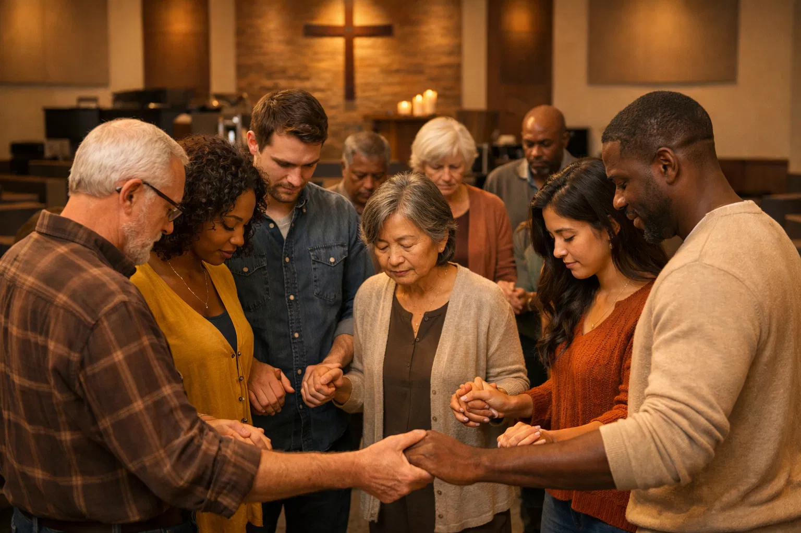

Uma comunidade comprometida em viver a identidade cristã através
da
transformação pessoal e do testemunho vivo de Jesus.
A Igreja é viva, ela diz respeito, antes de tudo, à consciência de vida que se revela na postura individual de cada membro do corpo, no comprometimento e no entendimento do que é SER COMO CRISTO.
Ser igreja não diz respeito apenas a uma sequência de serviços e uma organização operacional, não significa entreter pessoas, ou ainda, o quão grande é a agenda de eventos da instituição, embora possamos estar juntos nos divertindo e realizando eventos pontuais em família e ações evangelísticas.
Tudo isso pode e deve fazer parte de uma Igreja, mas a base fundamental está na consciência de identidade, ou seja,QUEM SOMOS nEle.
SER igreja é SER como Jesus.
Saiba Mais
Ser uma igreja saudável, que prega a palavra da verdade para tornar o máximo de número de pessoas possíveis parecidas com JESUS.
Em vez disso, falaremos a verdade em amor, tornando-nos, em todos os aspectos, cada vez mais parecidos com Cristo, que é a cabeça. — Efésios 4.15
Sermos ao máximo parecidos com JESUS.
Portanto, sejam imitadores de Deus, como filhos amados. — Efésios 5.1
Quando se fala de cultura, se faz uma combinação da visão, missão, valores e comportamentos que movem as pessoas diariamente a um sentido. Isso expõe a identidade, o quem somos e o para onde vamos de uma igreja.
Na igreja SER como Cristo, em Boituva SP, temos um jeito de ser bem definido. O que fazemos é o reflexo de quem somos. Toda nossa realização, desde a entrada, passando por cada departamento e até mesmo na agenda externa, gira em torno da cultura que desejamos, ser e fazer como Jesus, de uma forma simples e leve.
Não por força, nem por poder, mas pelo meu Espírito, diz o Senhor dos Exércitos. — Zacarias 4.6
A bíblia nos chama para sermos produtivos, para frutificarmos. Isso nos conduz a termos uma cultura de influência. Sermos a referência de quem é Cristo nos faz mostrar os valores do Reino de Deus na sociedade, uma cultura de viver a verdade, de mostrar a Cristo, promovendo um impacto social, exalando o bom perfume de Jesus, e chegarmos ao ponto em que as pessoas verão claramente Cristo em nós.
Nossa cultura pode e deve ser experimentada e palpável.
Publicar os valores do Reino de Deus através da nossa maneira de viver irá promover como consequência saúde e crescimento ao nosso redor. E Deus irá acrescentar aqueles que devem ser salvos.
Não se limitem, porém, a ouvir a palavra; ponham-na em prática. Do contrário, só enganarão a si mesmos. — Tiago 1.22